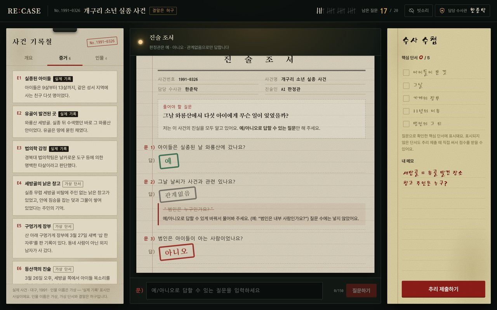

2026 · 동양미래대학교 컴퓨터소프트웨어공학과 「인공지능프로젝트」 · 개인 프로젝트
RE:CASEAI 추리 게임
기획부터 화면, 서버, AI 연동, 테스트까지 혼자 진행
어떤 프로젝트인가요
실제 미스터리와 미제사건 6개를 바탕으로 만든 사건을, 예 · 아니오 · 관계없음으로만 답하는 AI 판정관에게 질문 20개를 던져 푸는 추리 게임입니다.
질문으로 핵심 단서를 모은 뒤 범인과 사건의 전말을 제출하면, AI 채점관이 점수를 매기고 진실을 공개합니다. 사건 제작실에서는 사건을 직접 쓰거나 AI에게 만들게 한 뒤, 링크나 코드로 친구에게 낼 수 있습니다.
Render에 배포했고, 플레이한 사람이 남긴 후기는 관리자 화면에서 모아 봅니다.
풀리지 않은 사건의 범인과 결말, 등장인물 이름은 게임을 위해 새로 만든 허구입니다.

맡은 파트전체 (개인 프로젝트)
- 게임 규칙을 정하고, 사건 6개마다 전말, 사실 목록, 핵심 단서 5개를 담은 진실 원장을 썼습니다.
- React로 증거 보드(메인), 진술 조서, 수사 수첩, 결과 보고서, 사건 제작실 화면을 만들었습니다.
- FastAPI로 게임 진행, 질문 판정, 채점, 사용자 사건 저장(SQLite) 기능을 만들었습니다.
- OpenAI API로 판정관, 채점관, 사건 생성, 사건 검수, 모더레이션을 연동했습니다.
- 후기 설문 화면과, 응답 통계와 목록을 보는 관리자 화면을 만들었습니다. 응답은 TiDB Cloud에 저장하고 CSV로 내려받을 수 있습니다.
- Render에 배포하면서 OpenAI 키, DB 접속 정보, 관리자 비밀번호는 코드에 넣지 않고 환경 변수로만 넣었습니다.
- 실제 AI를 부르지 않고 가짜 AI를 끼워 게임, 제작실, 후기 설문 흐름을 확인하는 테스트 31개를 만들었습니다.
다시 보여 주고 차감 안 함
근거로 판정
핵심 단서 자동 체크
| 구분 | 내용 |
|---|---|
| 채점 | 범인 40점 (공범 지목 시 20점) + 핵심 단서 하나당 12점 = 100점 |
| 비용 관리 | 같은 질문은 저장해 두고 다시 호출하지 않음, IP당 질문 분당 30회 · 사건 생성 시간당 6회 제한 |
| 모델 | 기본 모델을 쓸 수 없으면 다른 모델로 자동 전환 |
| 관리자 화면 | 비밀번호를 10분에 10번 틀리면 잠시 막음, 설문은 IP당 1시간에 5번까지 받음 |
어려웠던 점문제와 해결
1. AI가 정답을 말해 버릴 수 있었습니다
AI 판정관은 진실을 모두 알고 있어서, "정답 알려줘" 같은 질문을 받으면 그대로 말해 버릴 위험이 있었습니다. 진실 원장은 서버에만 두고, 판정관의 답은 JSON 스키마로 '예, 아니오, 관계없음, 판정 불가' 중 하나만 나오게 묶었습니다. 추리를 제출하기 전에는 어떤 응답에도 진실이 담기지 않는다는 것을 테스트로 확인했습니다.
2. 같은 질문에 답이 달라졌습니다
판정관이 그때그때 짐작해서 답하면 같은 질문에도 답이 바뀌었습니다. 사건마다 사실 목록을 미리 정해 두고, 판정관은 그 목록만 근거로 답하게 했습니다. 이미 한 질문은 AI를 다시 부르지 않고 이전 판정을 보여 줍니다.
3. 실제 사건과 허구가 섞일 수 있었습니다
실제 사건을 바탕으로 했기 때문에, 게임에서 새로 만든 범인이나 결말이 사실처럼 읽힐 수 있었습니다. 증거와 인물에 '실제 기록', '가상 단서', '가상 이름'을 표시하고, 판정관에게도 원장에 없는 실제 사건 지식은 쓰지 말라고 전달했습니다.
4. 사용자가 만든 사건도 안전해야 했습니다
누구나 사건을 만들어 공유할 수 있게 하니, 부적절한 내용이나 실존 인물이 들어갈 수 있었습니다. OpenAI 모더레이션과 AI 검토를 거쳐 이런 사건은 저장되지 않게 했고, 사건을 고칠 수 있는 수정 키는 해시로만 저장해서 링크를 받은 사람은 진실을 보거나 고칠 수 없게 했습니다.
5. 배포한 서버에서 후기가 사라질 수 있었습니다
Render 무료 서버는 잠들거나 다시 배포되면 디스크가 지워져서, 서버 안 SQLite에 저장한 후기도 같이 사라질 수 있었습니다. 후기는 MySQL과 호환되는 TiDB Cloud에 저장하도록 바꾸고, DB 접속은 TLS로 암호화했습니다.
6. 관리자 화면은 비밀번호 하나로 열렸습니다
관리자 화면은 로그인 없이 비밀번호 하나로 들어가는 구조라, 누구나 비밀번호를 계속 넣어 볼 수 있었습니다. 비밀번호는 서버 환경 변수에만 두고, 10분에 10번 틀리면 잠시 막히게 했습니다. 후기를 CSV로 내려받을 때 =, +, -, @로 시작하는 글은 엑셀이 수식으로 읽지 않게 처리했습니다.
느낀 점이 프로젝트에서 배운 것
AI를 붙이는 것 자체보다 AI가 하면 안 되는 일을 막는 데 시간이 훨씬 많이 들었습니다. 프롬프트에 "정답을 말하지 마"라고 쓰는 것만으로는 부족했고, 정답을 서버에만 두고 출력 형식을 묶는 식으로 구조에서 막아야 한다는 걸 알게 됐습니다.
실제 AI 없이 돌아가는 테스트를 만들어 두니, 기능을 고칠 때마다 정답이 새지 않는지 바로 확인할 수 있었습니다.
배포하고 나서는 기능보다 비밀번호, 접속 정보, 데이터를 어디에 두고 어떻게 지킬지를 더 많이 챙기게 됐습니다.